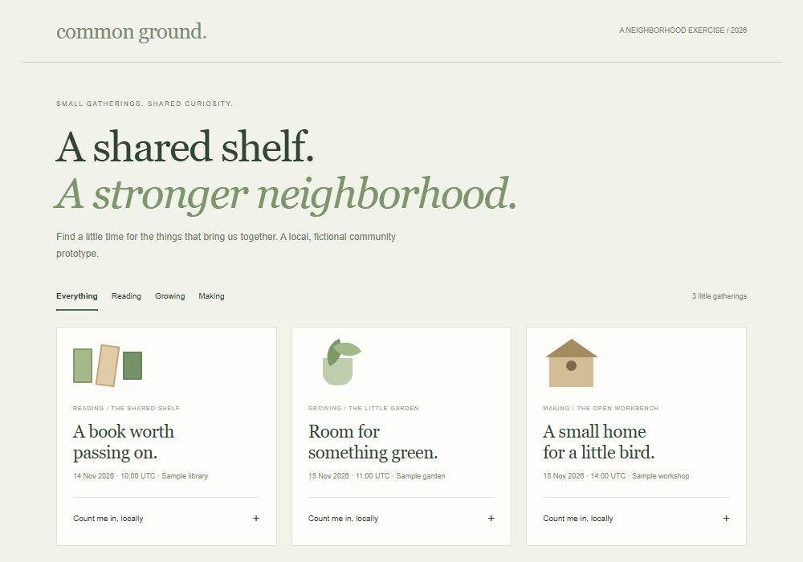
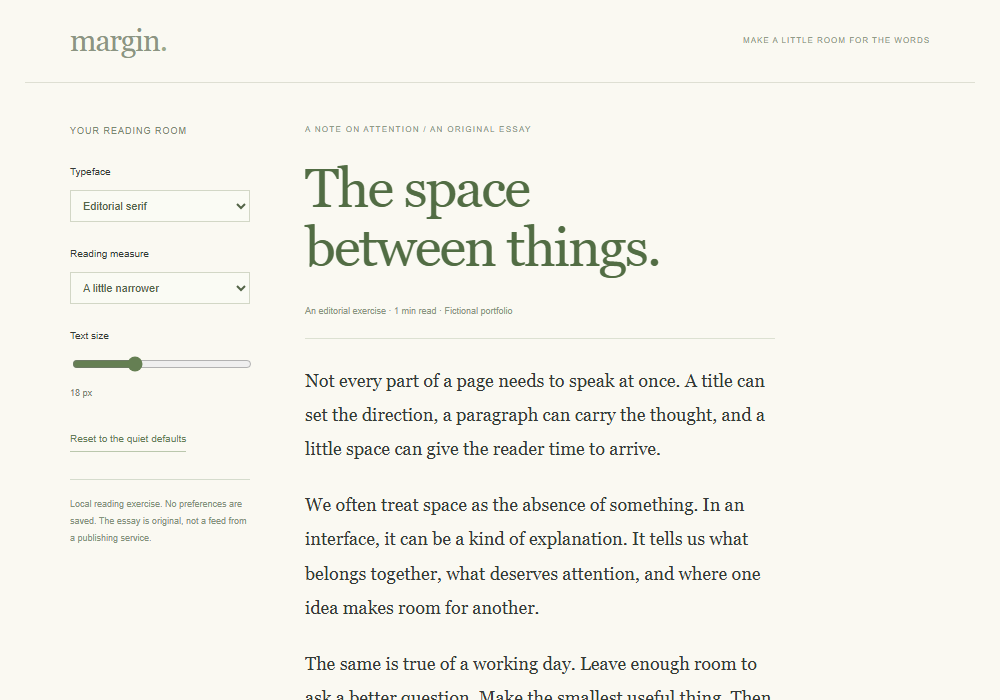
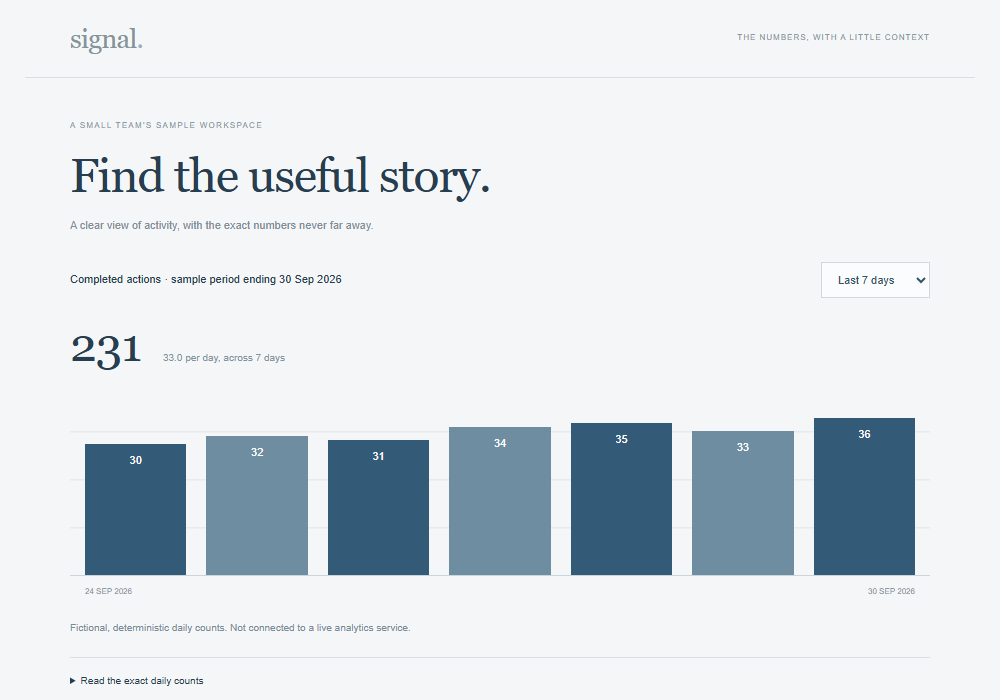
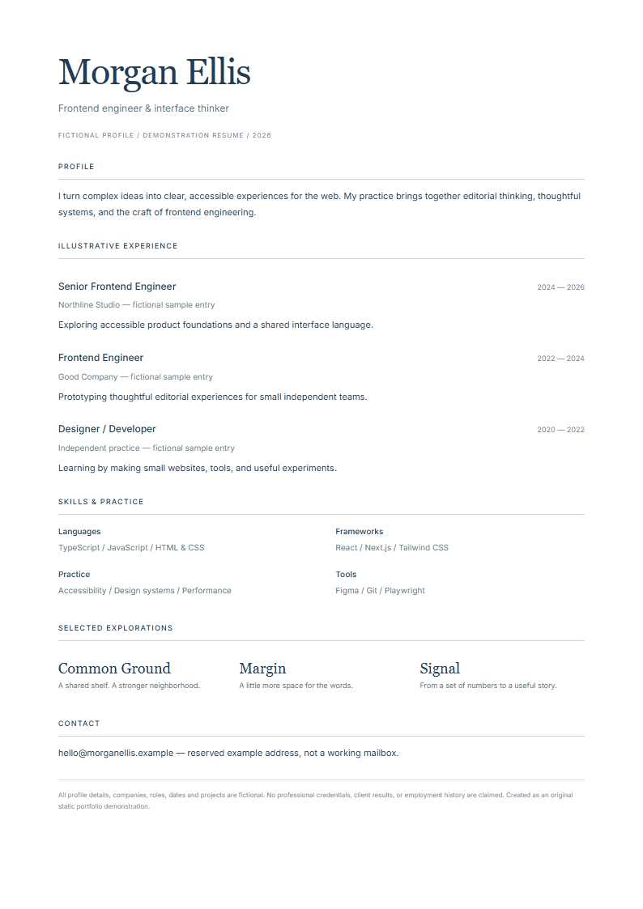

MORGAN ELLIS / FRONTEND ENGINEER
Interfaces,
with intent.
Thoughtful systems.
Human experiences.
I bring a designer's eye and an engineer's care to the things we use every day.

Small ideas.Made tangible.
A fictional portfolio about the craft of frontend engineering.
Original concepts. Working prototypes. No invented client results.
The person pictured is not Morgan Ellis.
MORE THAN THE SUM OF THE COMPONENTS
Curiosity is
part of the craft.
I’m Morgan, a frontend engineer who believes that the best interfaces make the complicated feel simple.
My work lives at the intersection of systems and storytelling. I’m interested in the structure beneath a beautiful page: the decisions that make it readable, resilient, and welcoming to the person on the other side.
I like a well-asked question, a useful prototype, and code that someone else can understand. The details matter, especially the ones most people never have to think about.
“Make it clear.
Then make it feel considered.”
Fictional professional profile. The narrative, skills, companies, and work history are illustrative rather than verified credentials.
A considered
way of working.
A useful foundation, a curious mindset,
and room to keep learning.
THE TOOLKIT
AN ILLUSTRATIVE PATH
All employment entries and technology competencies are sample content. This portfolio itself uses local HTML, CSS, and JavaScript.
Ideas, in
working order.
A closer look at the thinking,
the process, and what came out of it.
FIG. A / COMMUNITYPRODUCT THINKING / COMMUNITY
Common Ground
A shared shelf. A stronger neighborhood.
React concept / TypeScript / Accessible UX
PRODUCT THINKING / COMMUNITY
Common Ground
A shared shelf. A stronger neighborhood.
React concept / TypeScript / Accessible UX
FIG. B / READINGEDITORIAL DESIGN / READING
Margin
A little more space for the words.
Next.js concept / Responsive type / Interaction design

FIG. B / READINGEDITORIAL DESIGN / READING
Margin
A little more space for the words.
Next.js concept / Responsive type / Interaction design
FIG. C / DATADATA DESIGN / FRONTEND
Signal
From a set of numbers to a useful story.
React concept / Semantic tables / Data visualization

FIG. C / DATADATA DESIGN / FRONTEND
Signal
From a set of numbers to a useful story.
React concept / Semantic tables / Data visualizationEach card expands inline. Project stacks describe design directions; every linked prototype is real, self-contained HTML/JS. All projects are fictional and self-directed.
04 / A CONVERSATION
Good work starts
with hello.
Have an interesting problem, a thoughtful idea,
or a question worth exploring? Let's make space for it.
Local calendar exercise · Calendly is not connected · no booking is made
hello@morganellis.exampleReserved example address, not a working mailbox.
Platform homepages; verified personal profiles have not been supplied.
FICTIONAL PROFILE / DEMONSTRATION RESUME
On paper.

OPEN FULL-SIZE PDFThe thinking.
The tools.
The details.
A one-page snapshot of the fictional profile above, with selectable text in the PDF and a readable HTML transcript below.
Open PDFImage fallback for consistent inline viewing, including mobile. No third-party PDF viewer or document service.